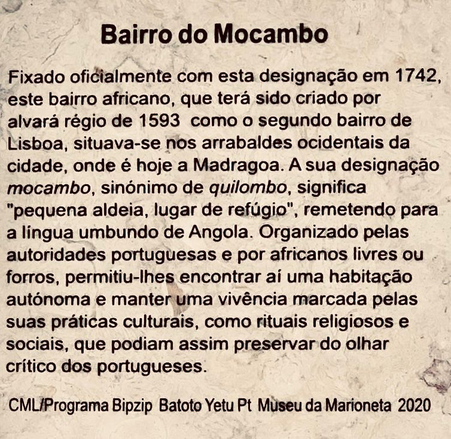

This garden was one of the places where the Portuguese World Exhibition of 1940 took place,
created in the political and Ideological context of the New State (Estado Novoa) to promote the
colonial empire. Here, the attempt to recreate the life of African villages marked by colonial
presence, where people were brought over explicitly from the colonies to be presented to the
Portuguese public.
NOT FINISHED
The statue of Dr. Sousa Martins is significant because he was a doctor, scientist and humanist. He worked for the royal family and for the people who were of lower economic status would charge his patients nothing and would often give them money. Due to his generosity and kindness he is a lay saint and people still honor him today.
The statue of Pai Paulino is not just a representation of one man but a symbol of the enduring spirit of resilience, love, and leadership within the Candomblé religion and the broader Luso-Afro community. It stands as a reminder of the strength found in unity, the importance of cultural heritage, and the power of familial bonds reconstructed through faith and shared history. The olive tree further enhances this symbolism, offering a profound connection to the values Pai Paulino embodied throughout his life.
As the model for the statue of abolitionist Marquês de Sá da Bandeira, Fernanda do Valle, also known as 'Preta Fernanda' was a writer, bullfighter, and overall influencial woman from Cape Verde who significantly impacted Lisbon society and the history of Africans in Portugal. Her life sheds light on the complex social dynamics at the time, providing valuable insights of pioneer African women.
Despite being mixed race and cognizant that his social status was questionable, Domingos Caldas Barbosa was able to climb the ranks of Portuguese high-society and literary circles. His musical compositions of Afro-Brazilian lundu and his invention of the genre modinha served as the backbone for the Portuguese genre Fado.
Dr. José Tomas de Sousa Martins Alhandra was a doctor and main professor at the Lisbon Medical-Surgical School. Recognized for his pioneering teaching and generosity towards patients, he achieved a reputation as a healer of psychic and physical wounds. He assisted in creating sanitariums in various parts of the world for people with serious diseases, including Tuberculosis.
Jardim Botânico Tropical was founded in 1906, ordered by the king, with the intention of organizing and rehabilitating colonial agriculture. Numerous pavilion structures were erected to represent Portuguese expansion, demonstrating lifestyles in colonies such as Angola and Mozambique. Today, the garden harbors several busts and statues of African indigenous figures as a reminder of the exploitations that came with colonial agriculture.
The Mocambo Neighborhood was a sanctuary for its African residents because it gave them autonomy in terms of housing and cultural expression. Nevertheless, as time went on, this area underwent several name changes and its reputation diminished, thus contributing to its African past being forgotten. Today, the neighborhood is popular and home to the working-class.

Maria Amália I helped spread African influence across Lisbon. Through her efforts, she organized parties and dances to incorporate African and Portuguese culture through dance, music, food, and every culture worldwide. Her parties and organizations would make headline news, and she would be well-known across Lisbon.
Cais Do Sodré was a location of movement between people, goods, and money throughout history. Africans have played a role in the transformation of the neighborhood through their contributions as merchants, laborers, dancers, and music performers.
The most noted Portuguese defender of the abolition of slavery, Marquês De Sá Da Bandeira was critical in the efforts to outlaw slavery and the slave trade in the Portuguese empire around the world. He was responsible for drafting Portugal's first modern constitution in 1822.
The mass burial site near Rua Poco dos Negros was ordered to serve as a burial ground to combat the health hazards caused by rotting African corpses discarded in various places across Lisbon. While the mass burial pit has been gone since the 18th century, the neighborhood of Mocambo became a center for African life. The cross street of Rua Poco dos Negros is “Jewish Crossing,” yet another of the neighborhood’s cosmopolitan, marginal, and laboring past. A 2020 namesake rap album 'Rua do Poco dos Negros' by Portuguese hiphop artist and former Benfica resident Valete (born Keidje Torres Lima) addresses the history and current implications of race relations in Portugal.
Virgínia Sofia Guerra Quaresma was the first female Portuguese journalist and a passionate activist. Being as she was of African descent, a feminist, and a fighter for equal rights during the late 19th and early 20th centuries, her contributions were, and remain, monumental.
After Lisbon was reclaimed from the Moors in the 1100s with the help of the English, this church was immediately built in honor of the Virgin Mary who the warriors prayed to in battle. After the earthquake in 1755, the original church was demolished and reopened in its current location in 1786.
Campo das Cebolas was a center point for African workers and merchants. Following the earthquake of 1755, a floodwall was constructed, and the area now stands as a tribute to the African workers and how they influenced commercial advancements within Lisbon.
The Kings Fountain painting depicts the vast social classes within Lisbon. In the bottom right corner, there appears to be an African dressed in upper-class clothing riding a horse. This represents a side of African history within Portugal where some Africans held upper-class titles.
An artistic representation and tribute to an honorable figure and inspirational leader with artistic and philosophical talents. Pai Paulino, of whom there were more than one, is not one person, but rather almost an African leadership archtype represents resilience, compassion, and wisdom.
The Church of São Domingos played a crucial role in protecting the African population in Lisbon. It provided shelter and support, which lessened the severity of their integration into Lisbon society. Today, this space remains rich in diversity and pays homage to various languages, religions, and cultures.
Destroyed in the earthquake of 1755, the Largo do Pelourinho Velho was a slave market for newly arrived enslaved people in Lisbon during the 16th century. It was here where enslaved people would be redistributed to their newly granted enslavers, given a new name, and soon baptized. It is important to remember this site as historical and significant but also a place of anguish and despair.
Rossio Square is a significant place for people of African descent partly because it was a slave market. Todos os Santos Hospital was built in this location but was destroyed by the 1755 earthquake.
Originally, African women of this community made a living from collecting and distributing water due to regulations of rationing and efficiency. The 'street of black women' was a center of entrepreneurship in the African Lisbon community, most notably of property ownership and sheltering travelers and outsiders.
Four black saints can be seen at the altar of Our Lady of Rosário. African brotherhoods centered around Our Lady of the Rosary were common in Portugal and Brazil as a way for African immigrants and descendants to build community and mutual aid networks. This altar includes depictions of Saint António of Noto (Sicily) and Saint Benedito of Palermo, both sons of African slaves or emancipated, Saint Ifigénia, a 1st century princess of Nubia, and Saint Elesbão, a 6th century emperor of Ethiopia.